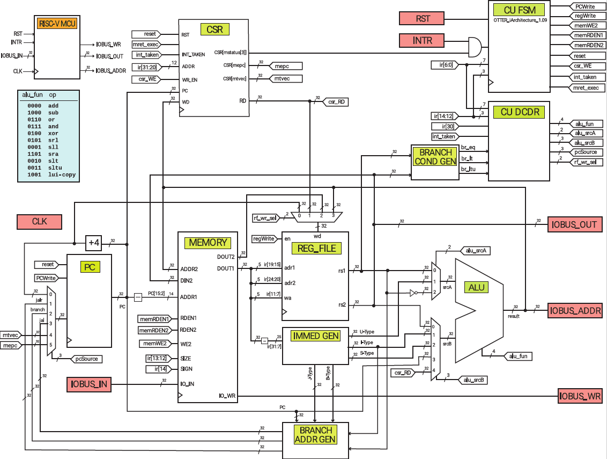
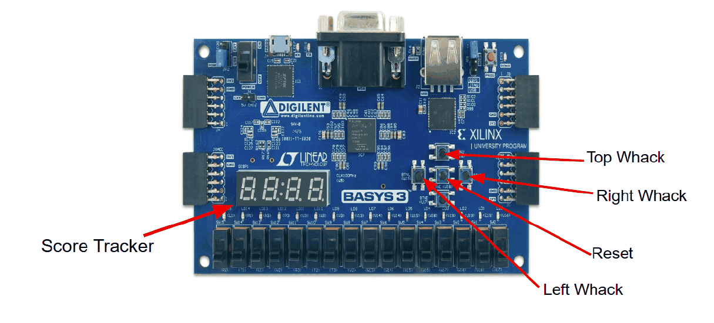

Overview
The OTTER is the RISC-V-based teaching processor at Cal Poly. Over the course I built it up module by module: the ALU, register file, datapath, and the control unit that decodes instructions and sequences everything else.
What I built
- The CPU. A modular SystemVerilog design with a separate datapath, control unit and ALU, each tested on its own before being put together. It also handles interrupts through a CSR module.
- Software. A custom instruction set and assembly language, and the game program written in it.
- I/O. VGA output and the board's buttons and seven-segment display wired into the processor's I/O bus, so the game runs with no computer attached.
- The game. Whack-A-Mole, running entirely on hardware I designed.


Playing it
Moles pop up from the holes on the monitor and you whack them with the push buttons on the Basys 3. Another button resets the game, and the score shows both on screen and on the board's seven-segment display.
